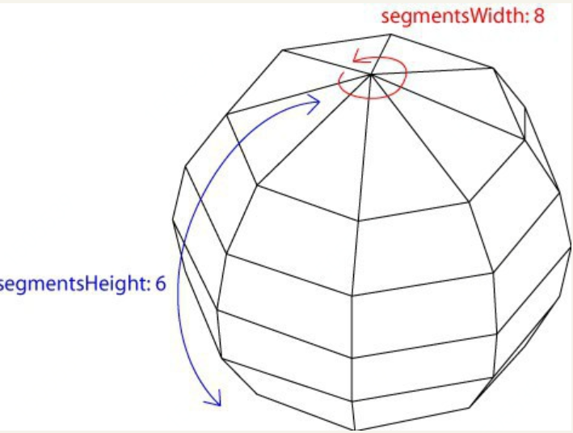
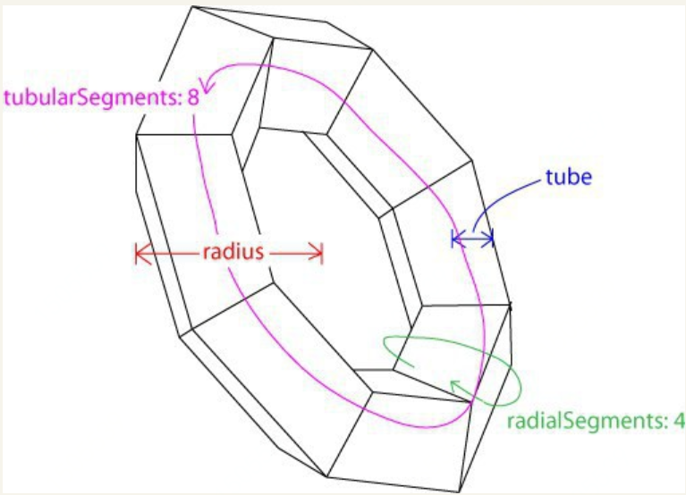

几何形状
在创建物体时，需要传入两个参数，一个是几何形状（Geometry），另一个是材质（Material）
几何形状（Geometry）最主要的功能是储存了一个物体的顶点信息
1.基本几何形状
立方体（ CubeGeometry ）
THREE.CubeGeometry(width, height, depth, widthSegments, heightSegments, depthSegments)
width是x方向上的长度；
height是y方向上的长度；
depth是z方向上的长度；
后三个参数分别是在三个方向上的分段数，如widthSegments为3的话，代表x方向上水平分为三份。
一般情况下不需要分段的话，可以不设置后三个参数，后三个参数的缺省值为1。
宽高长 X Y Z
分段 X Y Z 这个分段是对六个面进行分段，而不是对立方体的体素分段
平面 PlaneGeometry 其实是一个长方形
THREE.PlaneGeometry(width, height, widthSegments, heightSegments)
width是x方向上的长度；height是y方向上的长度；后两个参数同样表示分段
球体
THREE.SphereGeometry(radius, segmentsWidth, segmentsHeight, phiStart, phiLength, thetaStart, thetaLength)
radius是半径；
segmentsWidth表示经度上的切片数；
segmentsHeight表示纬度上的切片数；
phiStart表示经度开始的弧度；
phiLength表示经度跨过的弧度；
thetaStart表示纬度开始的弧度；
thetaLength表示纬度跨过的弧度。
分段
segmentsWidth和segmentsHeight。
使用var sphere = new THREE.SphereGeometry(3, 8, 6)
可以创建一个半径为3，经度划分成8份，纬度划分成6份的球体

圆形（CircleGeometry）可以创建圆形或者扇形
THREE.CircleGeometry(radius, segments, thetaStart, thetaLength)
圆柱体（CylinderGeometry）
THREE.CylinderGeometry(radiusTop, radiusBottom, height, radiusSegments, heightSegments, openEnded)
radiusTop与radiusBottom分别是顶面和底面的半径，由此可知，当这两个参数设置为不同的值时，实际上创建的是一个圆台；
height是圆柱体的高度；
radiusSegments与heightSegments可类比球体中的分段；
openEnded是一个布尔值，表示是否没有顶面和底面，缺省值为false，表示有顶面和底面
正四面体（TetrahedronGeometry）
THREE.TetrahedronGeometry(radius, detail)
正八面体（OctahedronGeometry）
THREE.OctahedronGeometry(radius, detail)
正二十面体（IcosahedronGeometry）
THREE.IcosahedronGeometry(radius, detail)
radius是半径；
detail是细节层次（Level of Detail）的层数，对于大面片数模型，可以控制在视角靠近物体时，显示面片数多的精细模型，而在离物体较远时，显示面片数较少的粗略模型。这里我们不对detail多作展开，一般可以对这个值缺省
圆环面（TorusGeometry）就是甜甜圈的形状
THREE.TorusGeometry(radius, tube, radialSegments, tubularSegments, arc)

radius是圆环半径；
tube是管道半径；
radialSegments与tubularSegments分别是两个分段数，详见上图；
arc是圆环面的弧度，缺省值为Math.PI * 2。
圆环结（TorusKnotGeometry）
THREE.TorusKnotGeometry(radius, tube, radialSegments, tubularSegments, p, q, heightScale)
p和q是控制其样式的参数，一般可以缺省，如果需要详细了解，请学习圆环结的相关知识；
heightScale是在z轴方向上的缩放。